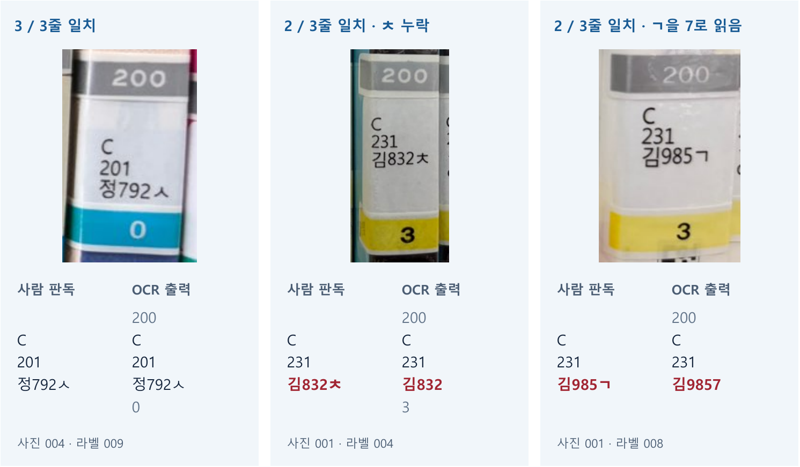

전주대학교 도서관 협업
전주대 도서관 책등 OCR
책등 사진의 청구기호를 읽어 장서점검에 활용할 수 있는지 살펴보는 프로젝트입니다.
전체 로드맵
-
Step 1. 휴대폰 카메라 기반 AR
진행 중스마트폰으로 책등을 촬영해 청구기호를 읽고, 정리된 결과를 기존 장서점검 프로그램으로 전달하는 흐름을 개발합니다.
-
Step 2. AR 글래스
계획AR 글래스를 착용한 상태에서 서가를 보며 점검 정보를 확인하는 방식을 검토합니다.
-
Step 3. 로봇
계획로봇을 활용해 서가 촬영과 장서점검을 보조하는 방안을 검토합니다.
문제 배경
기존 장서점검 프로그램은 등록번호를 기준으로 개별 도서를 확인합니다. 책등 라벨의 청구기호는 서가 배열을 판단하는 데 도움이 되지만, 같은 청구기호를 가진 여러 권을 구별하려면 등록번호와 같은 별도의 식별 정보가 필요합니다. 이번 데모는 사진에서 청구기호를 얼마나 정확히 읽을 수 있는지부터 확인합니다.
Step 1 처리 흐름 설계
- 스마트폰 카메라(AR). 책등 라벨을 촬영하고, 촬영 화면에 AR 안내를 적용하는 방향을 구상합니다.
- YOLO. 촬영 이미지에서 청구기호 라벨 위치를 찾아 OCR에 전달합니다. 3차 실험에서 YOLO11n을 도서관 사진으로 추가 학습해 구현했습니다.
- OCR. 전달받은 라벨 영역에서 글자 위치를 찾고 청구기호를 읽습니다. 3차 실험에서는 한국어 PP-OCRv5와 EasyOCR을 비교했습니다.
- 데이터 정리. 읽은 청구기호를 장서점검에서 확인할 수 있는 형식으로 정리합니다.
- 기존 프로그램 연동. 정리된 결과를 기존 장서점검 프로그램에 전달하는 방식과 등록번호 확인 절차를 검토합니다.
Step 1 현재 구현 및 준비
- 책마다 청구기호 라벨 영역을 직접 지정하고, 지정한 영역을 EasyOCR로 읽는 데모 코드를 작성했습니다.
- 같은 책이 찍힌 사진이 개발용과 최종 평가용에 나뉘지 않도록, 겹치는 사진을 검토하고 그룹 단위로 분리하는 절차를 마련했습니다.
- 라벨에 적힌 값을 수동으로 기록한 뒤 OCR 결과와 비교할 수 있도록, 완전 일치율과 문자 오류율을 계산하는 평가 코드를 마련했습니다.
3차 실험: 라벨 검출 + 청구기호 OCR
책장 사진 한 장에서 청구기호 스티커를 자동으로 찾고, 잘라낸 스티커의 글자를 읽는 전체 흐름을 처음으로 연결해 평가했습니다.
- 스티커 위치 검출. YOLO11n이 책장 사진에서 스티커마다 직사각형 박스를 예측합니다.
- 스티커 이미지 추출. 예측 박스에 여백을 더해 원본 사진에서 잘라냅니다.
- 글자 위치 검출과 인식. PP-OCRv5 모델이 스티커 안의 글자 영역을 찾고(DB 후처리), 한국어 인식 모델이 문자열로 바꿉니다(CTC 디코딩).
- 결과 저장. 줄별 문자열과 신뢰도 점수를 저장합니다.
라벨 검출 성능
사진 67장 중 60장으로 학습하고 7장으로 평가했습니다. Labelme로 그린 라벨 경계를 직사각형 정답 박스로 바꿔 사전학습된 YOLO11n을 추가 학습했습니다(입력 640픽셀, 30회 학습).
| 지표 | 결과 | 값 |
|---|---|---|
| 검출 재현율 | 정답 스티커 83개 중 76개 검출 | 91.6% |
| 검출 정밀도 | 예측 박스 78개 중 76개가 정답과 일치 | 97.4% |
| 검출 오류 | 미검출 7개 · 오검출 후보 2개 | — |
판정 기준: 신뢰도 0.25 이상, 예측 박스와 정답 박스의 IoU 0.5 이상, 일대일 매칭

청구기호 OCR 성능
검출된 라벨 78개 중 사람이 읽을 수 있는 69개에서 청구기호 207줄을 비교했습니다. 위아래 숫자 띠와 판독 불가 줄은 빼고, 공백과 영문 대소문자는 무시했습니다.
| OCR 모델 | 입력 영역 | 줄 일치율 |
|---|---|---|
| 한국어 PP-OCRv5 | 스티커 전체 | 63.3% (131/207) |
| 한국어 PP-OCRv5 | 청구기호 영역 | 58.5% (121/207) |
| EasyOCR | 스티커 전체 | 27.1% (56/207) |
| EasyOCR | 청구기호 영역 | 26.1% (54/207) |
가장 좋은 조합(PP-OCRv5 · 스티커 전체)에서도 한 스티커의 모든 줄을 맞힌 비율은 31.9%(22/69개)입니다.

Step 1에서 확인할 것
라벨 검출은 실사용에 가까운 수준이지만, 청구기호를 한 줄도 틀리지 않고 읽는 비율은 아직 낮습니다. 저자기호 끝의 한글 자음 오류를 줄이도록 OCR을 개선하고, 평가용 사진을 늘려 결과를 다시 확인할 계획입니다. 읽은 청구기호를 기존 장서점검 프로그램에 전달할 데이터 형식과 등록번호 확인 절차도 검토합니다.